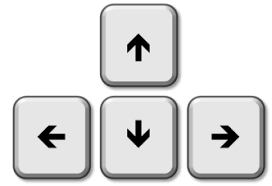
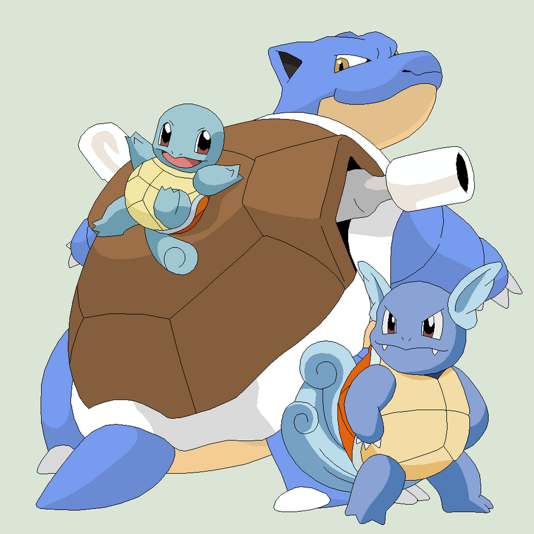

INSTRUCTIONS



How to Play:
- Use the arrow keys or WASD on your keyboard to move up, down, left, and right- Expand your window to play full screen
Your Team:
- Once you start the game, you will be given a team of four pokemon at randomHome Page:
- On the home page, you will find two houses, a healing house for your pokemon and a trainer with a battle arena- Use the arrow keys to walk around the property
- Instructions are located on the page with whether to click on, or walk into the house
Battle:
- Click on the trainer to begin a battle.- Your opponent will be given a team of four to battle against you
- You have two different types of moves: attack and special attack
- To check whether your pokemon has a pokemon more evolved than your current one, click Check Evolution
- If at any point you need to heal your pokemon, click the "Run" button in the bottom left corner
- The battle ends when you or your opponent has made all the pokemon faint
Training and Evolving
- After each opponent faint, your pokemon will gain one experience point- After two experience points, your pokemon will evolve after the game finishes!